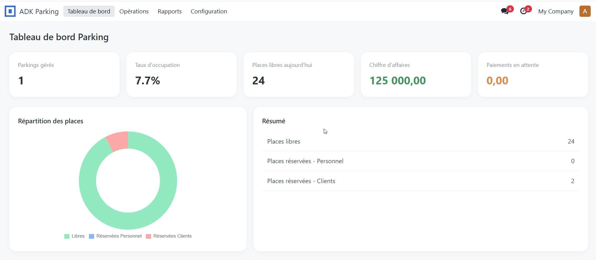
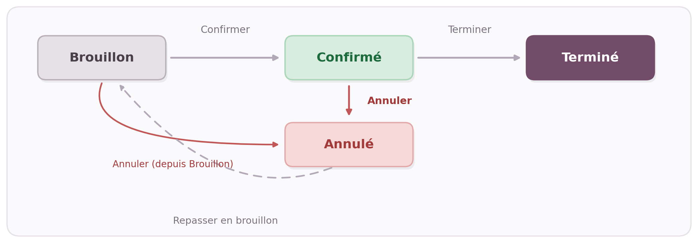

Gestion complète des parkings d'entreprise dans Odoo 18 : places, réservations, tickets, et facturation intégrée pour les parkings payants.
Odoo 18 · Parkings gratuits ou payants · Facturation & paiement · Ticket de réservation · Tableau de bord
Le module ajoute deux rôles d'accès. Vérifiez qu'ils correspondent à l'organisation de votre équipe avant la mise en production.
On crée le parking (nom, société, adresse, nombre total de places) et on précise s'il est gratuit ou payant. Le bouton « Générer les places manquantes » crée automatiquement les places numérotées jusqu'au total indiqué.
On choisit le parking, une place libre, le bénéficiaire (Personnel ou Client) et les dates. Sur un parking gratuit, aucun tarif n'est demandé ; sur un parking payant, le montant est calculé automatiquement selon la tarification configurée.
La tarification est entièrement configurable : chaque entreprise ou utilisateur peut définir les périodes et les modalités de tarification adaptées à son fonctionnement. Les unités ou périodes de facturation peuvent ainsi être configurées selon les besoins du parking, sans imposer un fonctionnement unique.
Une fois confirmée, la place passe « Réservée » et ne peut plus être attribuée à une autre réservation confirmée en même temps.
Pour une réservation Client sur un parking payant, le Manager crée la facture en un clic depuis la réservation. Une facture client standard Odoo est générée, avec la période et la place réservée en description de ligne.
Le paiement s'encaisse normalement depuis la Facturation, avec les modes de paiement du système : écritures comptables générées automatiquement. Dès que la facture est réglée (totalement ou partiellement), le statut de paiement de la réservation se met à jour tout seul.
Un ticket imprimable reprend les informations essentielles de la réservation : la société, le parking, la place, le bénéficiaire, le responsable, les dates, le statut de la réservation et le statut de paiement (ou la mention « Parking gratuit »).
Le module permet également de générer des rapports de réservation détaillés afin de retracer l'activité du parking. Les rapports peuvent être établis sur une période donnée, pour un parking précis ou sous la forme d'un rapport général regroupant l'ensemble des parkings.
Ces rapports permettent notamment de retrouver les réservations, les clients ou bénéficiaires concernés, le responsable du parking, les dates et heures de début et de fin, ainsi que l'état de chaque réservation (Brouillon, Confirmée, Terminée ou Annulée) et son statut de paiement (Non payé, Partiellement payé ou Payé). Ils offrent ainsi une vision claire et traçable de l'historique des réservations.
Une vue d'ensemble donne le taux d'occupation, la répartition Personnel / Client et le montant total impayé, tous parkings confondus.


Comme pour les modules Achats et Ventes, ADK Parking s'appuie sur la Facturation native d'Odoo plutôt que de réinventer une gestion de paiement à part.
Module natif Odoo 18, construit sur les applications Comptabilité/Facturation (account) et Discuss (mail).
Auteur : Kambeu Henang Ange Duval
Support : duvalkambeu61@gmail.com
Une question, un bug, une demande d'évolution ?
Contactez-nous, nous répondons rapidement.